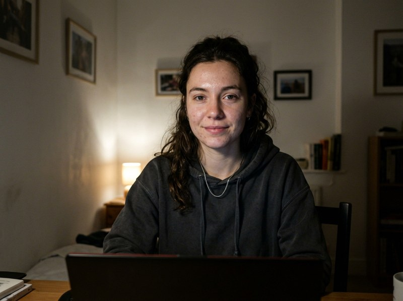
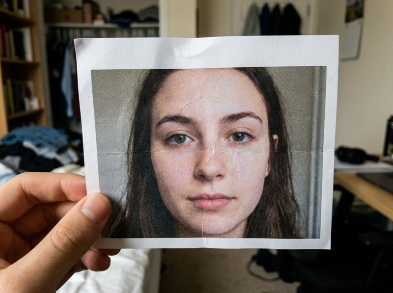
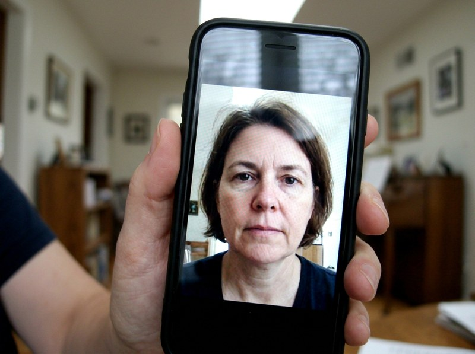

Is it a live face, or a printed photo / phone screen held up to the camera? A 600 KB MiniFAS model (98.2% accuracy on CelebA‑Spoof) answers in milliseconds, entirely in your browser.
Code & models: facenox/face-antispoof-onnx · Apache‑2.0



| # | Verdict | P(real) | Logit diff | Detector |
|---|
Works best with well‑lit, frontal faces. Example images are AI‑generated for illustration. Pipeline (YuNet detector → 1.5× crop → 128×128 MiniFAS) ported from the original repo. Demo by Rishabh Gusain.